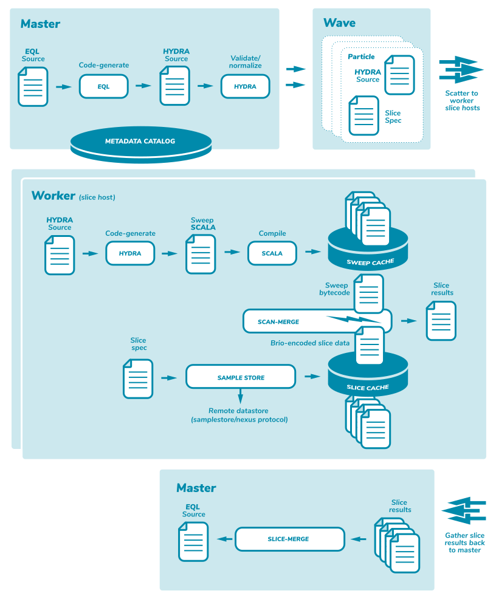

Paragraph
Burst Language Architecture
Multi stage pipeline
Burst made a valuable early decision to separate the execution pipeline into multiple distinct language based processing steps. The first step is occupied by a high-level SQL familiar language called EQL. The second step is a low level execution language called HYDRA. The EQL subsystem fields incoming external client analysis queries in the EQL language and generated corresponding HYDRA transcompilation as an output. The HYDRA subsystem takes incoming HYDRA language requests and generates SCALA transcompilation as an output. Finally the SCALA is compiled down to bytecode and the bytecode is used to implement high performance JIT warmed scan closures that execute the intended semantics of the incoming EQL construction.
The pipeline runtime

The sequence of operations as depicted above are:
- MASTER:
- EQL source is received via the client library
- EQL parses the source and validates against the schema
- EQL generates HYDRA source
- HYDRA parses source and validates against the schema
- HYDRA normalizes the source
- EQL source is received via the client library
- NETWORK:
- Hydra and Slice specs are serialized/scattered to worker-nodes
- Hydra and Slice specs are serialized/scattered to worker-nodes
- WORKER:
- Hydra checks sweep cache for generated artifacts
- Hydra parses the normalized source
- Hydra generates a Scala Traveler for the schema if needed
- Hydra generates a Scala Sweep that analysis if needed
- Scala compiler creates byte code for Traveler and Sweep if needed
- Slice is loaded or fetched through the slice cache if needed
- Traveler and Sweep are used to scan all the regions in the slice
- Hydra checks sweep cache for generated artifacts
- NETWORK:
- all worker slice merge results are serialized and sent back to master node
- all worker slice merge results are serialized and sent back to master node
- MASTER:
- slice results from all workers are merged together
- final result is sent back via the client library
- slice results from all workers are merged together